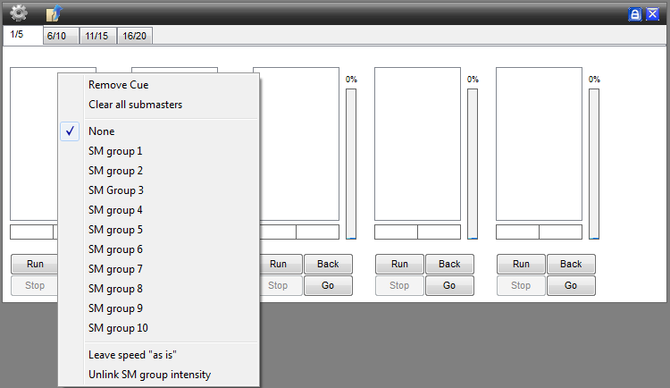
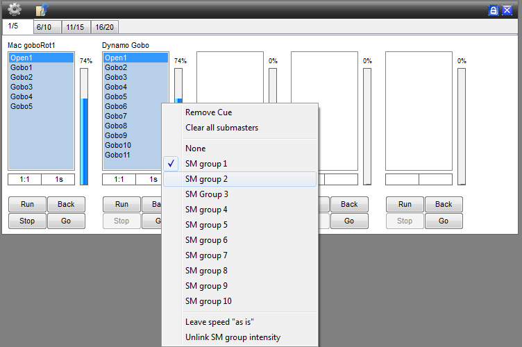

Table of Contents
Submaster config
Another way to load sequences into the cue is to use “Submasters” (SM).
With sub master the sequences are grouped in a cue file and then loaded into a “submaster” select box.
Only one of the sequences in the cue file / “SubMaster” select box can be selected at the time and there by loaded into the Cue List in the cue window.
Also look at:
Submaster config

The “Cog” icon, here you can enable “Start/stop fader control” or add your “Cue”.
{kind=link}
- Start/stop fader control, When selected a sequence running will stop when the submaster intensity is pulled
down to nothing or zero. You will notice that the highlighted SM becomes unhighlighted during this control
and will start running again and rehighlight when the intensity is pulled above nothing or zero.
If you press with the right mouse button on a Submaster (SM) there will appear a window with the next content
- Remove Cue, Removes only the cue from the selected submaster.
- Clear all Submasters, Clears all the Submasters
- SM group 1~10
- Leave speed “as is”, the speed will stay how it was if you press Run, instead of going back to 100%
- Unlink SM Group intensity, this will unlink the intensity slider. only available if you use SM groups!
You can do this with all the submasters individual 1~20
Submaster groups

With the submaster groups you can link two or more submasters together.
so this means if you press Run on SM1 it will also run SM2, and it's also the same with Intense.1 and 2 if you drag them.
You can have a total of 10 sm groups if you wish or no groups at all.
with “unlink Sm groups intensity” it will unlink the SM intensity slider so you can control both the intensity sliders separate.
{kind=link}
Intensity Features (HTP)
Ok, You have a Parcan and you make a Really easy Sequence, 1 step long and the value to 255.
now save and save it as a Cue, put this in to 2 Different Submasters, on:
SM1: The intensity Slider is set to 70%
SM2: The intensity slider is set to 50%
now 2 Different Submasters are controling ONE parcan
And the Output will be 70%, From SM1.
Now if you lower the Slider from SM1 to 40%
Then the Output will be 50% From SM2.
KEEP IN MIND IT'S JUST AN EXAMPLE
HTP is always used for parcans. (Intensity/Dimmer channels)
LTP
But you also have LTP (Latest Takes Precedence) This is used by all the other channels, Except the intensity channel.
What does this mean?
This means that only one sequence will be played back from a fixture channel.
For example take the Pan/Tilt channels.
If SM 1 has a moving sequence (like a shape) and SM 2 has a static position,
both sequences will not run at the same time. Instead whichever sequence was
started latest will run.